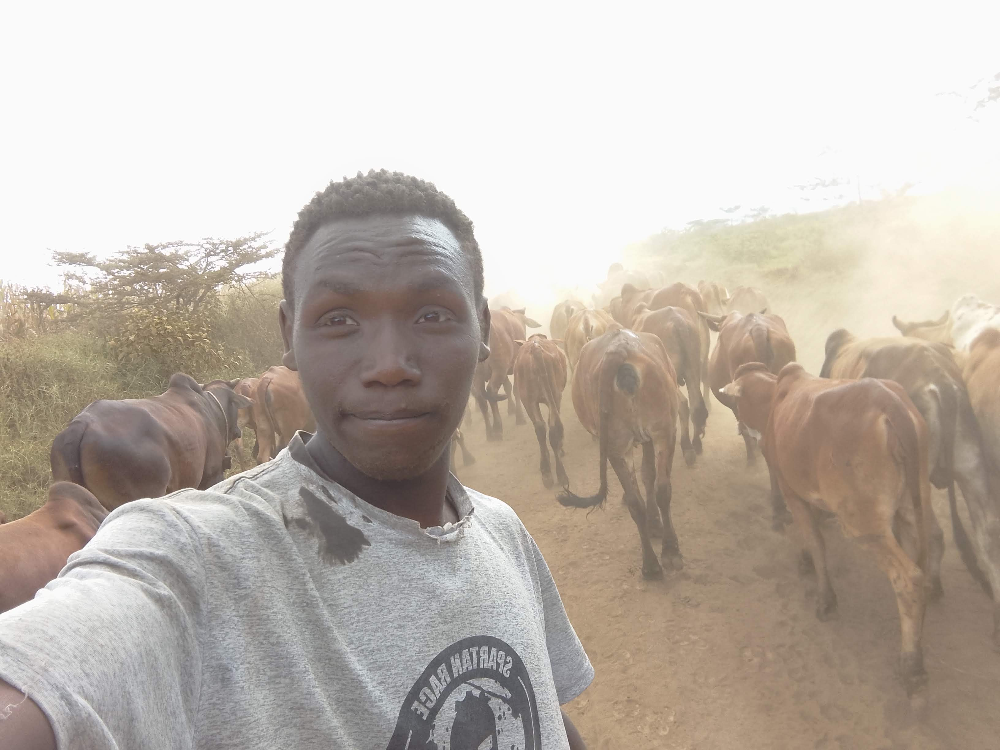
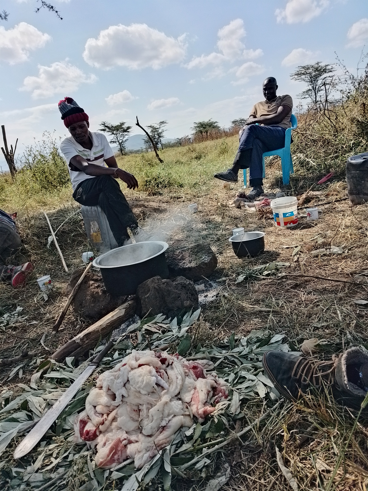

{kind=link}

{kind=link}


People in the savannah often live in rural villages, herding animals and farming crops like maize, millet, and sorghum.
Homes are usually simple, made from mud, sticks, and grass, designed to stay cool in the hot sun.
Daily life revolves around family, community, and the rhythm of nature, like moving livestock to find water during dry seasons.
Life in a Maasai village is full of warmth, love, and care for one another. Generosity isn’t just a word—it’s a way of life.
You might wake up early in the morning and someone is already offering you tea, not because they have to, but because they genuinely care about your well-being.
Neighbors help each other herd cattle, build homes, and celebrate important events together.
They often say, "Home is never far away from one who is alive," meaning that no matter where you go, the love and connection of your community follow you.
Family is treasured like your own hair: "When you let one sweep away, you never find a replacement again."
This wisdom teaches respect, care, and deep bonds that last a lifetime.
Love is everywhere—from elders guiding the youth with patience, to young couples celebrating marriage traditions,
to children playing under acacia trees, laughing and learning the stories of their ancestors.
Even the Maasai’s colorful clothing and intricate beadwork show love—for their culture, their community, and each other.
Life here is full of laughter, shared stories, dances that touch the sky, and lessons about kindness, respect, and the importance of caring for those around you
.
In every gesture, from offering milk to a visitor to protecting the herd together,
the Maasai show that love, family, and community are at the heart of savannah life.